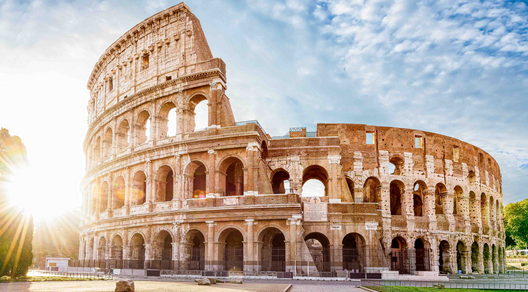
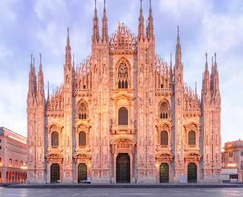
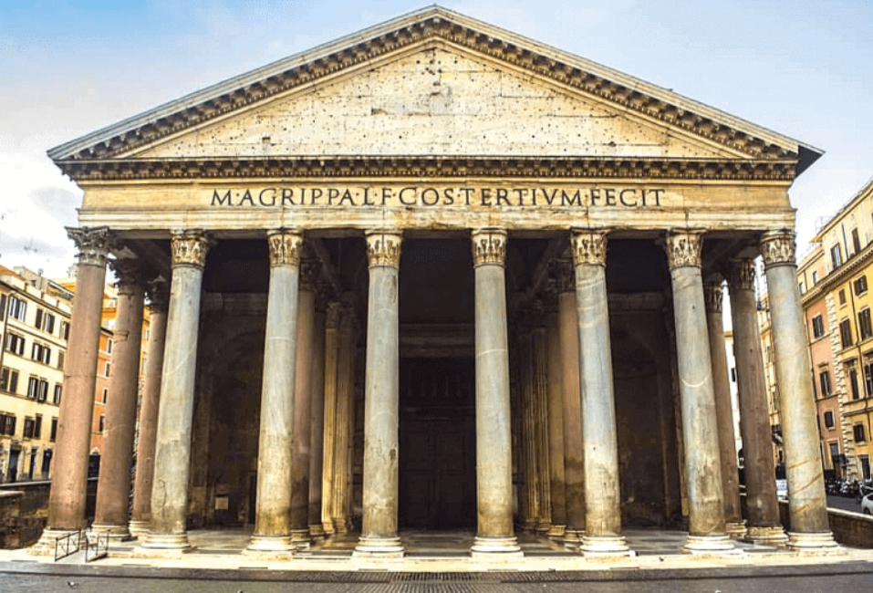
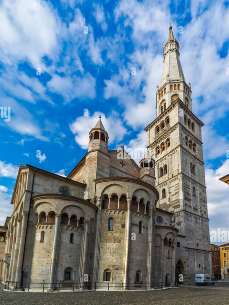
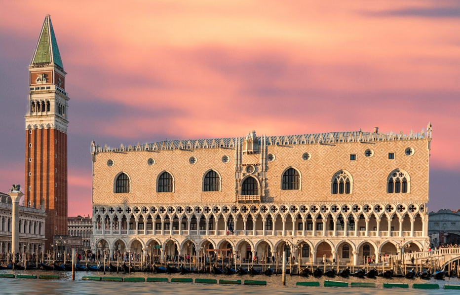

|  |
Colosseum |
Rome |
The largest amphitheater ever built, symbol of the Roman Empire's might. |
 |
Leaning Tower of Pisa |
Pisa |
Famous for its tilt, this bell tower draws tourists from all over the world. |
|  |
Milan Cathedral |
Milan |
One of the largest and most famous Gothic cathedrals in Europe, located in Milan. |
|  |
Pantheon |
Rome |
An ancient Roman temple, now a Catholic church, known for its large dome. |
 |
Rialto Bridge |
Venice |
One of the four bridges spanning the Grand Canal, a masterpiece of Venetian architecture. |
 |
Florence Cathedral |
Florence |
With its magnificent dome designed by Brunelleschi, it's an icon of the Italian Renaissance. |
|  |
ghirlandina |
Rome |
Famous for the Fountain of the Four Rivers and its elegant Baroque structures.
if you want to read more |
|  |
Doge's Palace |
Venice |
An iconic example of Venetian Gothic architecture, once the seat of the Doge of Venice. |